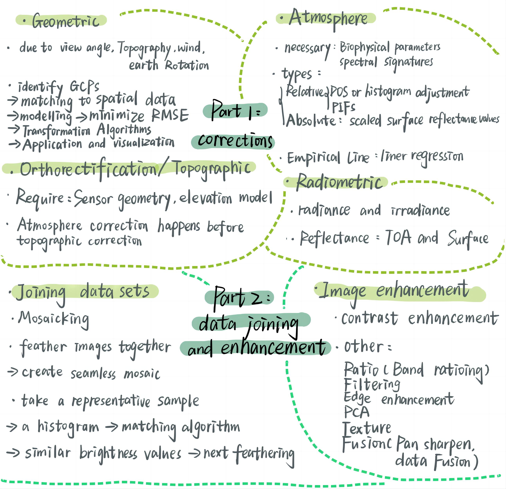

3 Week3 Corrections
3.1 Summary
3.1.1 Mind Map
The summary of this week’s content is outlined below in the mind map.
Mind map for Lecture 3
And I also want to add more detailed information about the enhancement techniques for remote sensing, cause I was quite confused when first exposed to this knowledge.
3.1.2 NDVI
Normalized Difference Vegetation Index (NDVI) is a standardized index that allows quantifying vegetation by measuring the difference between near-infrared and red light. NDVI values range from -1 to 1, with higher values indicating greater levels of vegetation health and vigor. This index is extensively used in agriculture for crop monitoring, environmental conservation efforts, and assessing vegetation health on a global scale.
3.1.3 Texture
Texture analysis involves the examination of the physical surface properties and patterns within an image. By analyzing the spatial distribution of intensity or color variations, texture analysis can identify different land cover types, geological formations, or urban structures. This technique enhances the interpretation of imagery by providing insights into the surface structure and composition that are not readily apparent in raw spectral data.
3.1.4 PCA
Principal Component Analysis (PCA) is a statistical procedure that transforms a set of observations of possibly correlated variables into a set of values of linearly uncorrelated variables called principal components. In the context of remote sensing, PCA is used to reduce the dimensionality of multispectral or hyperspectral data while retaining most of the variation present in the original dataset. This reduction helps in highlighting the most significant features in the imagery, facilitating better classification, and reducing computational complexity.
3.2 Applications
In the study conducted by Wu, Q., Jin, Y., & Fan, H. (2016), the authors study the performance of seven topographic correction methods across complex terrains using multi-source DEMs and Landsat-8 OLI data. It brings to light the crucial interplay between the choice of Digital Elevation Models (DEMs) and the efficacy of various topographic correction approaches, particularly emphasizing the superiority of the SCS+C correction method in various contexts. The findings intriguingly suggest that freely available, open-access DEMs can often outperform local topographic maps in topographic correction applications. This revelation not only marks a shift towards utilizing global DEM resources but also highlights the potential for enhancing environmental monitoring capabilities, especially in underdeveloped regions lacking access to high-quality local DEMs.
3.3 Reflections
This week’s lecture covered many methodologies and Professional vocabulary. It was a steep learning curve. This process of re-organizing my own mind-map, albeit time-consuming, has enriched my understanding of correcting data before analysis. Raw remote sensing data, while rich in information, often contain distortions caused by the atmosphere, sensor biases, or topographical effects. Without appropriate corrections, these distortions can lead to inaccuracies in interpreting the data, which could have significant implications for research findings and real-world applications.
3.4 References
Wu, Q., Jin, Y., & Fan, H. (2016). Evaluating and comparing performances of topographic correction methods based on multi-source DEMs and Landsat-8 OLI data. International Journal of Remote Sensing, 37(19), 4712-4730.